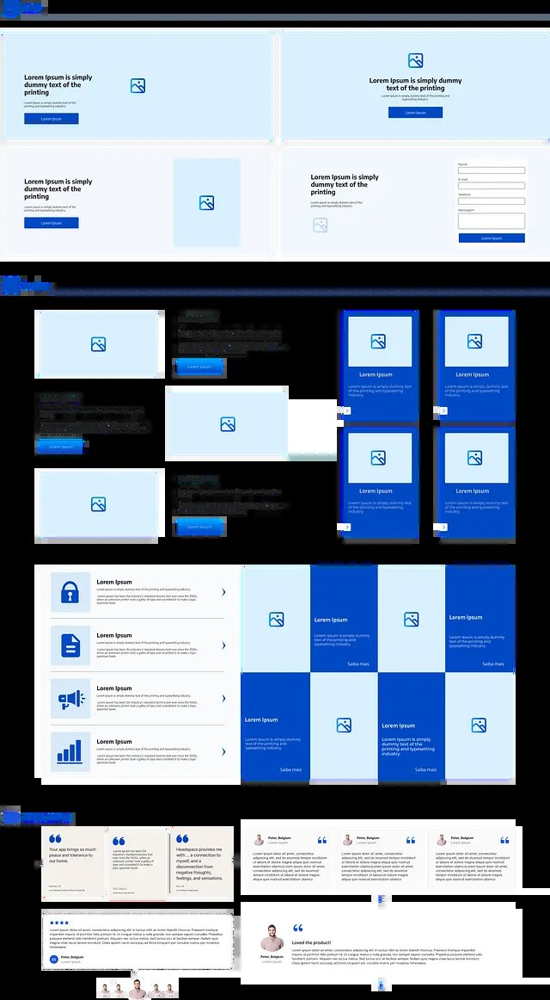

Case study · UX/UI Design · DesignOps
Designem escala
Como um sistema modular transformou a produção de sites institucionais, sem transformar marcas diferentes em versões do mesmo template.
- Minha atuação
- UX/UI Designer e idealizadora
- Áreas
- UX/UI, DesignOps, Design Modular
- Equipe
- 4 designers
- Construção
- 2 meses (1ª versão)
- Ferramenta
- Figma
- Status
- Implementado e em uso


 Pet · afetivoServiços · corporativoClínica · orgânico
Pet · afetivoServiços · corporativoClínica · orgânico
01 · Visão geral
Mais velocidade, sem um template único
Uma equipe de 4 designers, prazos curtos e uma fila com mais de 150 sites pendentes. Observando a rotina, identifiquei estruturas que se repetiam e criei uma biblioteca modular no Figma, inspirada em Design Systems, com componentes, seções e modelos reutilizáveis.
Os indicadores operacionais são estimativas retrospectivas, baseadas na experiência da equipe. Não havia registros históricos detalhados para auditoria.
02 · Contexto e desafio
Clientes diferentes, estruturas parecidas
A empresa produzia sites para negócios de segmentos variados. Mesmo com marcas distintas, quase todos os projetos precisavam das mesmas peças:
Montar essas estruturas a cada projeto consumia o tempo que deveria ir para tipografia, identidade visual e direção de arte. A gestora me pediu um mockup base para acelerar a produção.
Um template único
Resolveria parte da velocidade, mas criaria um problema novo: sites cada vez mais parecidos entre si.
Um sistema modular
Estruturas reutilizáveis que se combinam e se adaptam a cada marca. Apresentei à gestora e recebi autonomia para desenvolver e implementar.
Objetivo: reduzir o esforço com estruturas recorrentes sem comprometer a personalização, liberando tempo para a exploração criativa e ajudando a zerar a fila.
03 · Processo e pessoas
Quem participava da produção
usuários diretos Gestão · patrocinadora Implementação · briefings Desenvolvimento Comercial Clientes Visitantes dos sites
O design não falava com o comercial. Depois da venda, a equipe de implementação conduzia as reuniões com o cliente e montava o briefing visual. Mapa formalizado retrospectivamente.
Antes e depois do sistema modular
A pesquisa sobre o cliente continuou necessária. O que mudou foi a forma de transformar as informações em layout.
04 · Pesquisa e auditoria
Dois problemas diferentes no mesmo fluxo
Ao analisar um briefing real, ficou claro que o processo tinha um desafio informacional (informações incompletas ou espalhadas) e um desafio operacional (o esforço de transformar essas informações em estrutura visual). O sistema modular atua no segundo.
Pesquisa qualitativa retrospectiva · 6 analistas de implementação
Expectativas pouco definidas
Clientes explicavam o negócio, mas tinham dificuldade de traduzir isso em requisitos visuais.
Referências insuficientes
Faltavam exemplos, ou vinham sites de segmentos sem relação com o projeto.
Informações incompletas
Serviços, diferenciais e materiais gráficos chegavam faltando.
Decisões durante a execução
Ao ver o layout, clientes descobriam necessidades novas.
Espera muda expectativas
Quanto maior o intervalo até a apresentação, mais chance de mudança de opinião.
Integração entre equipes
Pedido por briefings mais estruturados e bibliotecas de referência por segmento.
Questionário com perguntas abertas e agrupamento temático. A pesquisa foi feita depois da implementação, para documentar o contexto. Ela não antecedeu a criação do sistema.
Auditoria de 5 mockups anteriores
Projetos de segmentos diferentes (veterinário, alimentício, mobiliário industrial) repetiam a mesma estrutura: header, banner, apresentação, cards de serviços, blocos alternados, depoimentos, CTA e footer. A personalização existia, mas faltava tempo para explorar tipografia, composições assimétricas e direção de arte.
Matriz CSD · formalização retrospectiva
Certezas
150+ projetos pendentes4 designersNovas demandas chegandoEstruturas recorrentesPouco tempo para exploraçãoSuposições
Reutilizar acelera a criaçãoModularidade aumenta a produtividadeSobra mais tempo para personalizarContribuir favorece a adoçãoFunciona entre segmentosDúvidas
Como organizar a biblioteca?Quais módulos priorizar?Como evitar sites parecidos?Como medir os resultados?A equipe vai aderir?05 · Definição
Padronizar a estrutura, não a criatividade
Hipótese: se os designers tivessem uma biblioteca de estruturas reutilizáveis e flexíveis, gastariam menos esforço com seções recorrentes e mais tempo com as decisões visuais de cada projeto.
| Critério | Criação individual | Template fixo | Sistema modular |
|---|---|---|---|
| Velocidade | Menor | Alta | Alta |
| Liberdade criativa | Alta | Limitada | Alta |
| Personalização | Alta | Limitada | Alta |
| Reutilização | Pouco estruturada | Alta | Alta |
| Evolução colaborativa | Limitada | Limitada | Alta |
| Esforço inicial | Menor | Menor | Maior |
Comparação formalizada retrospectivamente para documentar o raciocínio da escolha.
06 · A solução
Uma biblioteca em três níveis
Centralizada num arquivo do Figma chamado Mockup base. O maior desafio foi organizar o conteúdo para que fosse fácil achar, escolher e adaptar cada peça.
Componentes
Botões, cards, navegação, blocos de conteúdo.
Seções
Banners, institucional, serviços, diferenciais, depoimentos, CTA, contato.
Modelos
Combinações que servem de ponto de partida, sem composição obrigatória.
Mockup personalizado
Cores, tipografia, imagens e direção de arte de cada cliente.


Uma necessidade, várias composições
Texto e imagem lateral, conteúdo centralizado, imagem de fundo, duas colunas, banner com formulário.
Cards em grid, listas, mosaicos, carrosséis, blocos alternados, cards com ícones.
O que se reutiliza
O que se personaliza
Adoção pela equipe
Houve resistência no início: cada designer tinha seu próprio método. A biblioteca não impunha um processo rígido. Todos podiam escolher, adaptar e contribuir com novas peças. Depois da adaptação, os 4 designers passaram a usar.
07 · Resultados
Mais entregas, menos fila
Mockups por semana, por designer
Tempo de criação por mockup
| Capacidade estimada | Antes | Depois |
|---|---|---|
| Entregas semanais por designer | 5 | 7,5 |
| Capacidade semanal da equipe | 20 | 30 |
| Capacidade mensal projetada | 80 | 120 |
Dados estimados retrospectivamente. As projeções mensais consideram 4 semanas e não são registros reais de entrega. Não é possível isolar estatisticamente a contribuição do sistema para zerar a fila, mas não houve outras mudanças operacionais relevantes no período.
Mais diversidade visual · 7 mockups posteriores
| Critério | Antes | Depois |
|---|---|---|
| Tipografia | Menor diversidade | Maior exploração |
| Composição | Estruturas convencionais | Maior variedade |
| Imagens | Tratamentos convencionais | Recortes e sobreposições |
| Elementos gráficos | Aplicações pontuais | Integrados à identidade |
| Direção de arte | Limitada pelo tempo | Mais soluções diferentes |
No segmento pet, por exemplo, dois negócios com necessidades parecidas ganharam linguagens bem diferentes: um temático, com texturas; outro afetivo, com formas orgânicas. A modularidade não obrigou o mesmo visual.
Três mockups feitos depois do sistema. A espinha dorsal se repete (hero, apresentação, serviços, categorias, depoimentos, contato), mas cada um tem tipografia, formas e direção de arte próprias.
Análise qualitativa por observação dos mockups. Não foram feitos testes de usabilidade nem medição de conversão.
Avaliação das hipóteses
| Hipótese | Evidência | Avaliação |
|---|---|---|
| Reutilizar reduz o tempo de criação | De ~2 dias para 0,5–1 dia | Sustentada por relato |
| Modularidade aumenta a produtividade | +50% semanal estimado | Sustentada por relato |
| A personalização é preservada | Auditoria de 12 mockups | Sustentada qualitativamente |
| A equipe adota a solução | 4 de 4 designers | Confirmada |
| A biblioteca continua relevante | Ainda em uso | Confirmada |
| Reduz retrabalho e aumenta a satisfação do cliente | Sem indicadores | Não avaliada |
08 · Aprendizados
Eficiência e criatividade não são opostas
Juntar referências não basta
A forma de classificar e disponibilizar o conteúdo decide se a biblioteca é útil.
Adoção é sobre hábitos
A ferramenta precisa respeitar a autonomia de quem usa e mostrar benefício rápido.
Repertório coletivo
Com contribuições da equipe, a biblioteca deixou de depender só de quem a criou.
Planejar a métrica desde o início
Sem linha de base, os resultados dependem de estimativas.
O que eu faria diferente hoje
- Entrevistar designers e analistas antes de construir
- Começar com poucos módulos e validar o uso antes de ampliar
- Medir desde o início: tempo por mockup, entregas, uso dos módulos, alterações e satisfação
- Definir governança: nomenclatura, documentação e critérios para incluir novas peças
- Usar IA para analisar briefings e sugerir estruturas, sem tirar a decisão do designer
Próximo capítulo
Do sistema modular ao Modu Studio
Os aprendizados deram origem ao Modu Studio, um projeto autoral em desenvolvimento que usa IA para centralizar informações do cliente, analisar referências e gerar alternativas de wireframe.
Leitura completa
Quer ver todo o processo?
Pesquisa, auditoria e limitações da avaliação estão detalhadas no Medium.